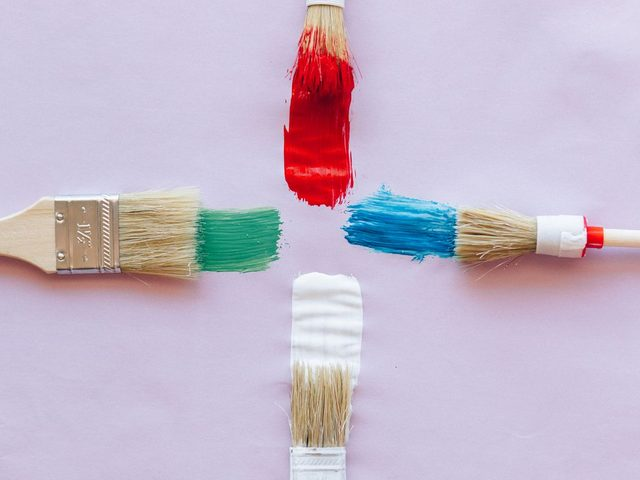
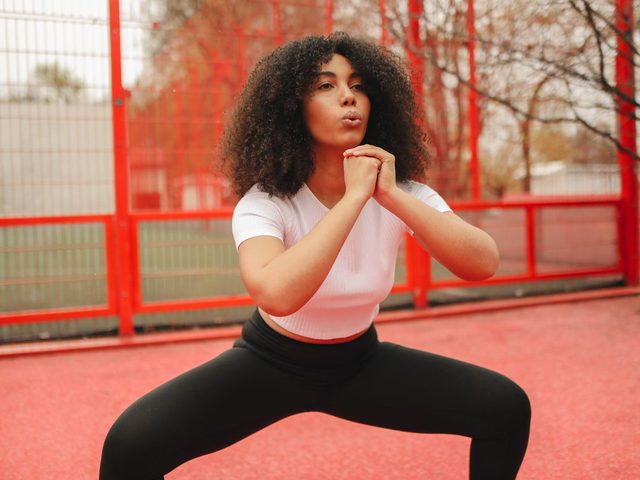
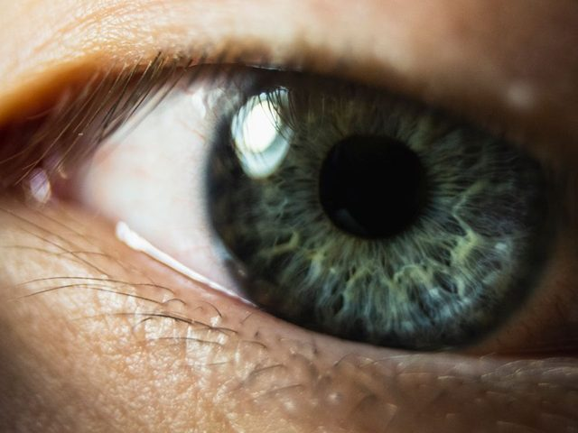
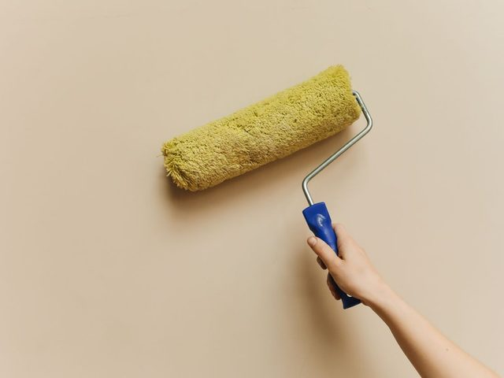
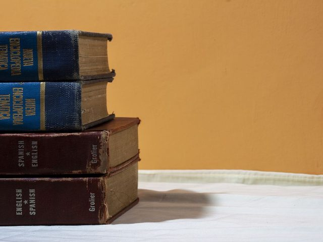

LALA WORD · UNIT 4
一字多義（四）
The Talking Shower
17 個單字一字多義
本單元單字一覽
shower 是淋浴，也是「陣雨」；face 是臉，也可以當動詞「面對」。這個單元有 6 個主題單字、11 個更多單字。
showerworkanswerstrongquestionfacebrushcourtevenexerciseeyelikeoncepaintthenthicktop
每個字先聽 🔊，再一個意思一個意思看例句。
1. shower 主題單字．3 個意思

shower
shower - showered - showered - showering
n.淋浴take a shower 洗澡；shower cap 浴帽
I take a shower every night.
我每天晚上淋浴。
n.陣雨
There will be showers this afternoon.
今天下午會有陣雨。
v.大量地給予shower + 人 + with + 物 送給某人很多…
Grandma showered us with gifts.
奶奶送我們好多禮物。
2. work 主題單字．5 個意思

work
work - worked - worked - working
v.工作
My dad works at a hospital.
我爸爸在醫院工作。
v.（機器）運轉
The TV doesn't work. Can you fix it?
電視壞了，你可以修嗎？
v.運動健身（work out）work out 健身
She works out at the gym every morning.
她每天早上去健身房運動。
v.起作用；有效
This medicine really works.
這個藥真的有效。
n.作品；著作
This painting is a famous work of art.
這幅畫是有名的藝術作品。
3. answer 主題單字．4 個意思

answer
answer - answered - answered - answering
v.回答
Please answer my question.
請回答我的問題。
v.接（電話）；應（門）answer the phone 接電話；answer the door 應門
Can you answer the phone? I'm busy.
你可以接電話嗎？我在忙。
n.答案the answer to …的答案
Do you know the answer to question 5?
你知道第五題的答案嗎？
n.回覆
I sent her a message, but I got no answer.
我傳訊息給她，但沒有回覆。
4. strong 主題單字．4 個意思

strong
strong - stronger - strongest
adj.強壯的；有力的
My brother is strong. He can carry the big box.
我哥哥很強壯，他搬得動這個大箱子。
adj.強勁的（風、水流）
The strong wind blew my hat away.
強風把我的帽子吹走了。
adj.濃的（氣味、味道）
This coffee is too strong for me.
這杯咖啡對我來說太濃了。
adj.堅固的
We need a strong box for the books.
我們需要一個堅固的箱子裝書。
5. question 主題單字．3 個意思

question
question - questioned - questioned - questioning
n.問題；試題
May I ask you a question?
我可以問你一個問題嗎？
n.懷疑
There is no question that he is the best player.
毫無疑問，他是最好的球員。
v.詢問；質問
The police questioned the man for an hour.
警察盤問那個男人一個小時。
6. face 主題單字．6 個意思

face
face - faced - faced - facing
n.臉
Wash your face before breakfast.
吃早餐前先洗臉。
n.表情pull a long face 板著臉
Why the long face? What happened?
幹嘛板著臉？發生什麼事？
n.面子lose face 丟臉；save face 保住面子
He didn't want to lose face in front of his friends.
他不想在朋友面前丟臉。
n.表面；正面
They climbed the north face of the mountain.
他們攀爬山的北面。
v.面對face the music 承擔後果；Let's face it. 面對現實吧。
You have to face the problem.
你必須面對這個問題。
v.面向；朝向
My bedroom faces the sea.
我的房間面向大海。
7. brush 更多單字．5 個意思

brush
brush - brushed - brushed - brushing
n.刷子；畫筆toothbrush 牙刷；hairbrush 梳子
I need a brush to paint the door.
我需要一支刷子來漆門。
n.灌木叢brush fire 灌木叢火災
A rabbit ran into the brush.
一隻兔子跑進灌木叢裡。
v.刷
Brush your teeth before bed.
睡前要刷牙。
v.輕輕擦過brush against 輕碰；brush past 擦身而過
A cat brushed against my leg.
一隻貓輕輕擦過我的腳。
v.塗（醬汁）
Brush some oil on the bread.
在麵包上刷一點油。
8. court 更多單字．2 個意思

court
複數 courts
n.球場
The students are playing on the basketball court.
學生們在籃球場上打球。
n.法院；法庭
The man had to go to court.
那個男人必須上法院。
9. even 更多單字．6 個意思

even
adv.甚至
Even my grandma can use a smartphone.
連我奶奶都會用智慧型手機。
adv.更加（比較）
Today is even hotter than yesterday.
今天比昨天更熱。
adv.即使（even if）even if 即使
Even if it rains, we will go.
即使下雨，我們也會去。
adv.儘管（even though）even though 儘管
Even though he was sick, he went to school.
儘管他生病了，他還是去上學。
adj.平坦的；均等的
The road is not even. Be careful.
路面不平，小心。
adj.偶數的
Two, four and six are even numbers.
二、四、六是偶數。
10. exercise 更多單字．4 個意思

exercise
exercise - exercised - exercised - exercising
v.運動
I exercise for thirty minutes every day.
我每天運動三十分鐘。
n.運動do / take exercise 運動
Swimming is good exercise.
游泳是很好的運動。
v.行使（權利）
Adults can exercise their right to vote.
成年人可以行使投票權。
n.練習；習題
Do the exercises on page 20.
做第二十頁的習題。
11. eye 更多單字．3 個意思

eye
eye - eyed - eyed - eyeing
n.眼睛
She has big brown eyes.
她有一雙棕色的大眼睛。
n.注目all eyes are on 大家都注意著…
All eyes were on the new student.
所有人都在注意那位新同學。
v.注視；打量
The boy eyed the last piece of cake.
那個男孩盯著最後一塊蛋糕看。
12. like 更多單字．4 個意思

like
like - liked - liked - liking
v.喜歡
I like ice cream very much.
我非常喜歡冰淇淋。
v.想要（would like）would like to + V 想要
I would like a glass of water, please.
我想要一杯水。
prep.像look / sound like 看起來／聽起來像
You look like your mother.
你長得像你媽媽。
prep.例如
I like fruits like apples and grapes.
我喜歡蘋果、葡萄之類的水果。
13. once 更多單字．3 個意思
1️⃣
once
adv.一次once in a while 偶爾
I go swimming once a week.
我一星期游泳一次。
adv.曾經
There was once a big tree here.
這裡曾經有一棵大樹。
conj.一旦…就…
Once you start, you can't stop.
你一開始就停不下來。
14. paint 更多單字．3 個意思

paint
paint - painted - painted - painting
n.油漆；顏料
Wet paint! Don't touch.
油漆未乾，請勿觸摸。
v.油漆
We painted the fence white.
我們把籬笆漆成白色。
v.（用顏料）畫
Amy likes to paint flowers.
Amy 喜歡畫花。
15. then 更多單字．3 個意思
then
adj.當時since then 從那時起；just then 就在那時
I met him in 2020, and we have been friends since then.
我 2020 年認識他，從那時起我們就是朋友。
adv.然後；接著
Wash the rice, then cook it.
先洗米，然後煮。
adv.那麼；既然如此
You're tired? Then go to bed.
你累了？那就去睡覺吧。
16. thick 更多單字．3 個意思

thick
thick - thicker - thickest
adj.厚的；粗的
This dictionary is very thick.
這本字典很厚。
adj.濃的（湯、霧）
The fog was so thick that we couldn't see the road.
霧濃到我們看不見路。
adj.茂密的be thick with 布滿
The girl has thick black hair.
那個女孩有濃密的黑髮。
17. top 更多單字．3 個意思
top
複數 tops
n.頂部on the top of 在…最上面
We climbed to the top of the hill.
我們爬到山丘頂上。
n.上衣
I like your yellow top.
我喜歡你的黃色上衣。
adj.頂尖的；最好的
She is one of the top students in our school.
她是我們學校最頂尖的學生之一。
一字多義：最常見 vs. 容易忽略的意思
| 單字 | 最常見的意思 | 容易忽略的意思 |
|---|---|---|
| shower | 淋浴 | 陣雨；大量地給 |
| work | 工作 | （機器）運轉；有效；作品 |
| face | 臉 | 面子；面對；朝向 |
| brush | 刷子；刷 | 灌木叢；輕輕擦過 |
| court | 球場 | 法院 |
| even | 甚至 | 平坦的；偶數的 |
| eye | 眼睛 | 注視；打量 |
| top | 頂部 | 上衣；頂尖的 |
常用片語
| 片語 | 意思 | 例句 |
|---|---|---|
| take a shower | 洗澡 | I take a shower after dinner. |
| work out | 健身 | He works out three times a week. |
| answer the phone / door | 接電話／應門 | Can you answer the door? |
| lose face / save face | 丟臉／保住面子 | He didn't want to lose face. |
| even if / even though | 即使／儘管 | Even though it was late, he kept working. |
| once in a while | 偶爾 | Once in a while, we eat out. |
| would like to | 想要 | I would like to go to Japan. |
快問快答：這句的 粗體字 是什麼意思？
1Grandma showered us with gifts.大量地給予
2This painting is a famous work of art.作品；著作
3I sent her a message, but I got no answer.回覆
4We need a strong box for the books.堅固的
5The police questioned the man for an hour.詢問；質問
6My bedroom faces the sea.面向；朝向
7Brush some oil on the bread.塗（醬汁）
8The man had to go to court.法院；法庭
快問快答：這句的 粗體字 是什麼意思？
1Two, four and six are even numbers.偶數的
2Do the exercises on page 20.練習；習題
3The boy eyed the last piece of cake.注視；打量
4I like fruits like apples and grapes.例如
5Once you start, you can't stop.一旦…就…
6Amy likes to paint flowers.（用顏料）畫
7You're tired? Then go to bed.那麼；既然如此
8The girl has thick black hair.茂密的
學完了！接下來
複習方法
review
- 回到「📗 單字卡」，按「遮中文」，看例句說出每個意思
- 特別記「容易忽略的意思」（例如 pen 圍欄、ball 舞會）
- 每個例句跟著 🔊 唸一次
準備好了
- 按右上角「📝 前往測驗」
- 測驗錯的題目要訂正到全對
- 訂正完成補送 1 點